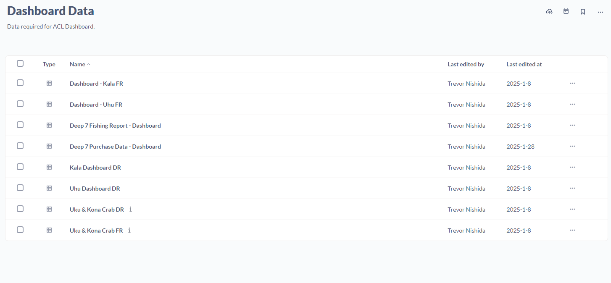
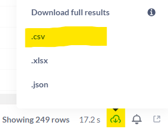
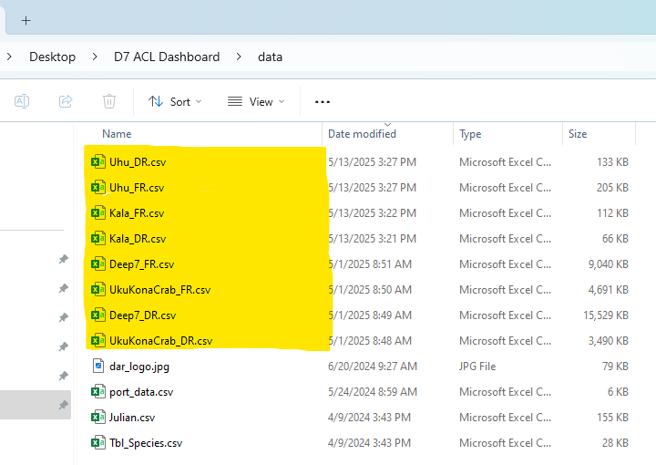
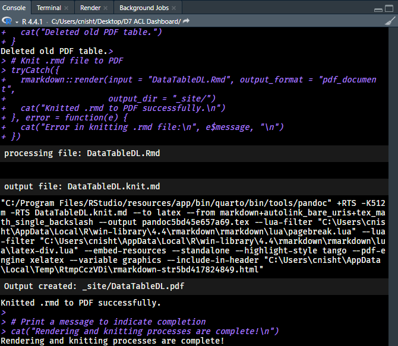

4 Updating the Dashboard
4.1 Downloading up-to-date Data

The data powering this dashboard is sourced directly from Metabase.
A dedicated folder within Metabase contains all the necessary queries used in generating the dashboard visualizations and summaries.
To update the data:
Open each query in the Metabase folder.
Click the Download button located in the bottom-right corner of the screen.
- It looks like a cloud with a down arrow

- Select the .csv option from the download format choices.
After downloading, rename each file to match the expected filenames used in the dashboard code.
In most cases, the appropriate filename matches the title of the Metabase query.
For example, the query titled “Deep 7 FR” should be saved as Deep7_FR.csv. Consistent naming is critical for the code to run without errors.
If you are unsure of what to rename the file, check the “data” folder in the D7 ACL Dashboard folder.
4.2 Replacing Dashboard Data
Once all CSV files have been downloaded and appropriately renamed, navigate to the data folder within the D7 ACL Dashboard project directory.
Replace the existing CSV files by dragging and dropping the newly downloaded files into the folder.
When prompted, select “Replace the files in the destination” to ensure the dashboard uses the most up-to-date data.

4.3 Rendering the Dashboard
Once the data files have been placed into the data folder, navigate to the D7 ACL Dashboard directory and find the buildDashboard.R file.
Once located, open the file up, select all code (CTRL + A), and run all the code (CTRL + ENTER). This will knit each individual qmd file as well as deleting the old PDF data download before replacing it with a brand newly knitted one.
During this time, the RStudio console will printout any errors which occur as well as printing a status message when the knitting is completed.
